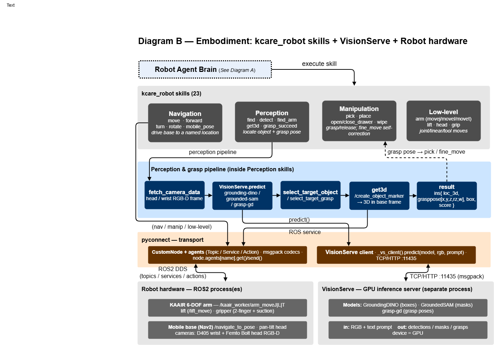
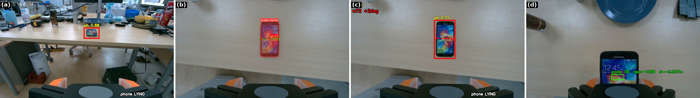
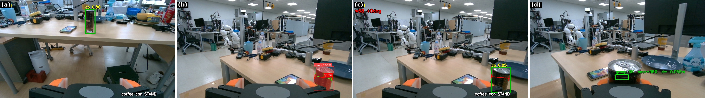
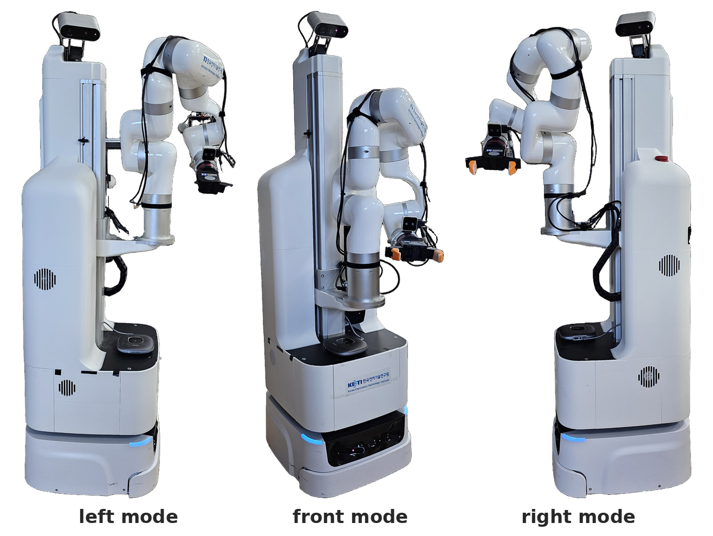

Embodiment: skills, vision & hardware
This page covers the robot-specific half of the stack: the kcare_robot
skill set, the perception-and-grasp pipeline, the VisionServe GPU server,
and the ROS2 hardware — all reached through the pyconnect transport.
{kind=link}

The embodiment stack (export diagram_body.drawio → images/diag_embodiment.png).
The skill contract
Every skill is a plain function skill(node, **params) -> dict that returns a
planner-readable result, at minimum {isdone: bool, msg: str}. Skills are
stateless; all device access goes through node.agents[...] (never raw ROS).
SkillRegistry.execute dispatches either an internal skill (a
module:function pair) or an external one (an HTTP endpoint), returning
the same result shape so the verifier treats them identically.
Skill groups
Group |
Skills |
|---|---|
Navigation |
|
Perception |
|
Manipulation |
|
Low-level |
|
The full per-skill reference — prompt usage, dev usage and input syntax — is in Manual.
Perception & grasp pipeline
The interesting work happens inside the Perception skills. A typical find /
grasp resolves through these stages:
Fetch RGB-D —
fetch_camera_datareads the head (Femto Bolt) or wrist (RealSense D405) camera vianode.agents[...].Detect —
VisionServe.predict(model, rgb, prompt=...)runs an open-vocabulary model (grounding-dinofor boxes,grounded-samfor masks,grasp-gdfor grasp poses).Select —
select_target_object/select_target_grasppick the best detection by quality / proximity.Lift to 3D —
get3d(the/create_object_markerROS service) and the head-to-base calibration project the pixel target into the base frame.Result — a dict
ins{ loc_3d, pose_3d, grasppose:[x,y,z,rz,w], box, score, ... }that drivespick/fine_move.
Two real runs, as seen by the robot’s own cameras (all overlays are produced live by the pipeline):
{kind=link}

pick the phone: (a) head camera detects the phone on the table
(ph 0.88, pose LYING); (b) wrist camera segments it and scores a
grasp candidate (q0.97); (c) fine_move aligns the gripper
(width 72 mm, +2°); (d) the grasp check passes
(grasp OK, near=100%).
{kind=link}

pick the coffee can: the same detect → segment → align → verify
sequence on a standing can (co 0.80, q0.96, width 68 mm,
grasp OK, near=98%).
The corresponding external-webcam videos of both runs are embedded on Architecture.
VisionServe — GPU inference server
VisionServe is a separate process (typically on a GPU machine) that the
robot reaches over TCP/HTTP at :11435:
Models: GroundingDINO (boxes), GroundedSAM (masks), grasp-gd (grasp poses), plus a generic detector.
Request: an RGB image + a text prompt; response: detections / masks / grasps with scores, plus inference
deviceand timing.Client:
_vs_client().predict(model, rgb, prompt=...)wraps the call; the connection is registered inconnections.json(see Configuration).
Because vision runs out-of-process, the robot PC stays light and the GPU box can serve several robots.
Robot hardware (ROS2)
{kind=link}

The real robot in its three arm-mount configurations — left, front and right mode. The KAAIR arm rides the vertical lift rail; the head camera sits on the pan-tilt mast.
kcare_robot targets a mobile manipulator wired through ROS2 actions,
services and topics, each wrapped as a pyconnect agent:
Subsystem |
ROS2 interface (examples) |
|---|---|
KAAIR 6-DOF arm |
|
Lift / elevator |
|
Gripper (2-finger + suction) |
|
Pan-tilt head |
|
Mobile base |
|
Cameras |
D405 wrist + Femto Bolt head RGB-D (compressed image topics) · camera-info |
3D / poses |
|
A head-to-base calibration (intrinsics + a transform chain with per-mode
error corrections) projects detections from the head camera into the base frame;
the wrist camera provides the close-range frames for fine_move grasping.
For how devices are declared and swapped per site, see Configuration; for
the pyconnect node/agent framework itself, see ROS2-based Framework.